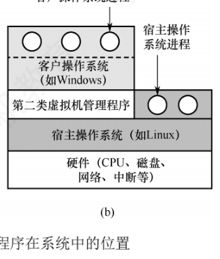
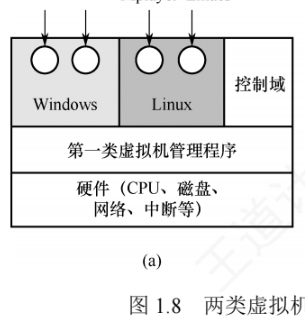

1.6 虚拟机
1.6.1 虚拟机的基本概念
虚拟机是指通过虚拟化技术，把一台物理计算机抽象为多台逻辑上独立的计算环境，每台虚拟机都表现为完整硬件系统的精确复制品。虚拟化技术的核心在于隐藏底层物理硬件的细节，向上层提供统一且隔离的执行平台。主流的虚拟化方案按虚拟机管理程序（VMM）的位置分为两类。
1. 第一类虚拟机管理程序（裸金属架构）
第一类虚拟机管理程序直接运行在物理硬件之上，是系统中唯一处于最高特权级的软件。它类似一个轻量级的操作系统，负责管理硬件资源、并发调度多个虚拟机；每个虚拟机都可以安装独立的操作系统（称为客户操作系统），彼此完全隔离。

在这类架构中，客户操作系统运行在虚拟内核态——它以为自己处于真实的 CPU 内核态，实际上并非如此；客户操作系统的用户进程则运行在真实的用户态。当客户操作系统执行一条只允许在真实内核态执行的敏感指令时，会触发异常并陷入虚拟机管理程序。此时：
- 在支持硬件虚拟化的 CPU 上，虚拟机管理程序能根据执行上下文判断指令来自客户操作系统还是用户程序：前者就代为完成其功能；后者（用户程序非法执行敏感指令）则模拟真实硬件的异常响应行为；
- 在早期不支持硬件虚拟化的 CPU 上，所有敏感指令都被透明重定向到虚拟机管理程序，由它通过软件模拟实现相应功能。
2. 第二类虚拟机管理程序（寄居架构）
第二类虚拟机管理程序以应用程序的形式运行在宿主操作系统（如 Windows 或 Linux）之上，依赖宿主系统进行资源分配与调度，本质上是一个用户态进程；尽管如此，它仍向客户操作系统伪装成完整的硬件平台。VMware Workstation 是 x86 平台上首个广泛使用的第二类虚拟机管理程序。

首次启动时，第二类虚拟机管理程序会模拟一台新计算机的行为，用户把客户操作系统安装到虚拟磁盘（实际上是宿主操作系统中的一个普通文件）中，之后即可正常启动和运行。
| 第一类虚拟机管理程序 | 第二类虚拟机管理程序 | |
|---|---|---|
| 别名 | 裸金属架构 | 寄居架构 |
| 运行位置 | 直接运行在物理硬件之上 | 作为应用程序运行在宿主操作系统之上 |
| 特权地位 | 系统中唯一处于最高特权级（内核态）的软件 | 本质是用户态进程，与普通应用地位相同 |
| 角色类比 | 轻量级的操作系统 | 向客户操作系统伪装成完整硬件平台 |
| 典型代表 | —— | VMware Workstation（x86 平台首个广泛使用者） |
考点虚拟化技术的原理与特点是 2025 真题考点：核心结论有两条——VMM 必须运行在高于操作系统的特权级上才能拦截和模拟敏感指令、维持虚拟机间隔离；虚拟化支持在一台物理机上构建多个虚拟机，也能借助仿真或动态二进制翻译支持跨指令集架构。
3. 虚拟化的典型应用
虚拟化技术在 Web 主机领域应用广泛：没有虚拟化时，服务商只能提供共享托管（用户无法控制软件环境）或独占托管（成本高昂）；借助虚拟化，单台物理服务器可同时运行多个虚拟机，每个虚拟机对用户而言都是一台完整的服务器，支持自定义操作系统与软件，成本显著降低——这正是当前主流云服务器服务的基础。